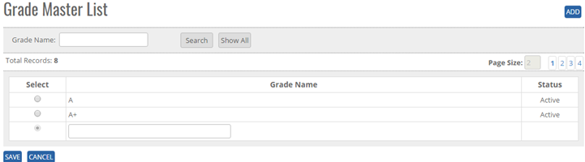
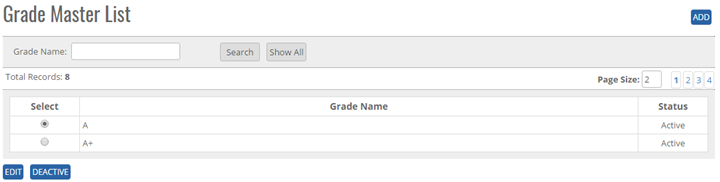


	<section>
		<article>
			<h2>Grade Master<span></span></h2>
			<div>
				<p></p>
				

				<p>Grade Master comes under Commercial Module. Grade Master, where user can update rating E.g. (A, B, C, A++, )</p>

				<p><b>ADD New Grade in the master</b> </p>

				<p>Click on Grade List page, user will get Add button, search Button, Show all button, Page Record, as shown in below image.</p>

				<div class="triangle-border top">
					
				</div>


				<p>Click Add Button on top right corner of the page as shown in the figure.</p>

				<p><b>To add Grade in the system, System will be having following fields </b></p>

				<p>- User can enter Grade in Text Box (alphanumeric is valid)</p>

				<p>Click on <b>Save</b> button user will get alert message <b>"Grade Record Added successfully"</b>. </p>

				<p><b>Note:</b> By Default Status will show ACTIVE </p>

				<p><b>Modifying Existing Grade Master:</b></p>

				<p>The user who has right to edit can edit the existing Grade list.</p>

				<div class="triangle-border top">
					
				</div>


				<p>Go To>>Master>>Commercial>>Grade>>Search Grade>>Click Radio Button (Grade Name)>><b>EDIT</b>. System will allow to edit all Grade Master Details.</p>

				<p>Click on <b>Save</b> button user will get alert message <b>"Record Added successfully"</b> and Click on <b>Cancel</b> Button, the Record will not get updated.</p>

				<p><b>De Activate/ Activate Existing Grade</b></p>

				<p><b>DeActive</b> - Click on Deactivate Button, once the button is clicked it will ask confirmation message "Are you sure you want to Deactivate this record" with "OK and cancel" button.</p>

				<p>If user clicks on OK Button, record will get deactivated and if clicks on Cancel, record will not get deactivated.</p>

				<p><b>Active</b> - Same way once a record is deactivated, system will show Active button. If user clicks on Active button, record will get activated.</p>

				<p><b>Search /Show All Criteria</b></p>

				<p>- User can search the Grade name and then click on <b>Search</b>, it will show the result as per the search criteria. User can search name by single alphabet.</p>

				<p>- If user want to check all Grade name then click on <b>Show All</b> Button. It will show the list </p>
			</div>
		</article>
	</section>